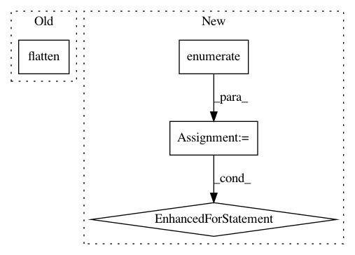

b50ca39a02936ba01324abee3adfd84a3ffdd057,demos/genes/data.py,GeneGraph,get_batch,#GeneGraph#Any#Any#,94
Before Change
flatten = lambda l: [item for sublist in l for item in sublist]
coex, ppi, epis = self.sample_neighs(indices, ns[0])
coex_1 = self.sample_neighs(flatten(coex), ns[1])
ppi_1 = self.sample_neighs(flatten(ppi), ns[1])
epis_1 = self.sample_neighs(flatten(epis), ns[1])
return (
self.get_labels(indices),
After Change
// YT: somewhat generalized version of the commented-out snippet above:
neigh_1hop = self.sample_neighs(indices, ns[0])
neigh_2hop = dict()
for i, et in enumerate(self.adj.keys()):
neigh_2hop[et] = self.sample_neighs(flatten(neigh_1hop[i]), ns[1])
return (
self.get_labels(indices),
[
self.get_feats(flatten(inds)).reshape([nb, -1, self.feats.shape[1]])
In pattern: SUPERPATTERN
Frequency: 3
Non-data size: 4
Instances
Project Name: stellargraph/stellargraph
Commit Name: b50ca39a02936ba01324abee3adfd84a3ffdd057
Time: 2018-06-29
Author: yuriy.tyshetskiy@data61.csiro.au
File Name: demos/genes/data.py
Class Name: GeneGraph
Method Name: get_batch
Project Name: r9y9/nnmnkwii
Commit Name: a40369acf3f968835b045ffb108e580043b67eed
Time: 2017-07-09
Author: zryuichi@gmail.com
File Name: nnmnkwii/autograd/mlpg.py
Class Name: MLPG
Method Name: backward
Project Name: hyperopt/hyperopt
Commit Name: e8380a03134a586a554643abdef0944c3651b771
Time: 2011-10-22
Author: dyamins@gmail.com
File Name: hyperopt/theano_gp.py
Class Name: GP_BanditAlgo
Method Name: GP_EI_optimize